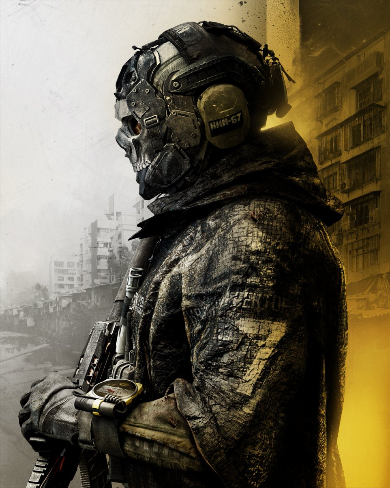

01
2007 · MW1
O começo do conflito moderno
A ameaça de Zakhaev coloca SAS e Marines em uma operação global. Price e Soap entram em uma história marcada por sacrifício e lealdade.
OrigemDOSSIÊ 01 · TASK FORCE 141
Do primeiro conflito global de Price ao retorno de Ghost, relembre como a saga Modern Warfare construiu um dos universos mais marcantes dos jogos de tiro.

“The enemy has changed. The mission hasn't.”
Sobre este projeto
Esta página transforma uma ideia inicial em um mini arquivo visual. A linha do tempo usa dados no HTML, enquanto os filtros são controlados pelo JavaScript para demonstrar como uma interface pode responder ao visitante.
Campanhas principais
2007 · MW1
A ameaça de Zakhaev coloca SAS e Marines em uma operação global. Price e Soap entram em uma história marcada por sacrifício e lealdade.
Origem2009 · MW2
Com Makarov em ascensão, a Task Force 141 enfrenta traições e missões que mudam o equilíbrio do mundo para sempre.
Ruptura2011 · MW3
Price, Soap e Yuri perseguem Makarov em uma corrida contra o tempo. A campanha fecha um ciclo com consequências pessoais.
Acerto de contas2019–2023 · MW4
A nova linha do tempo apresenta uma Task Force 141 renovada, com Ghost, Gaz, Alejandro e Price enfrentando ameaças híbridas.
RecomeçoVozes da missão
Os personagens funcionam como pontos de entrada para a narrativa. Use os cartões abaixo como exercício para adicionar novos perfis.
Líder, estrategista e memória viva da unidade.
Operador encoberto conhecido pelo crânio e pelo silêncio.
Soldado determinado que atravessa gerações da saga.